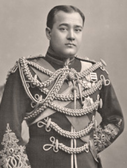
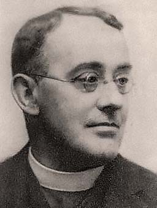
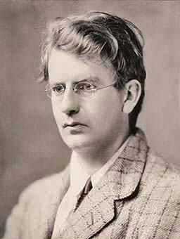
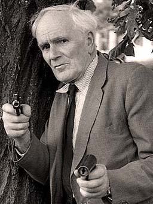
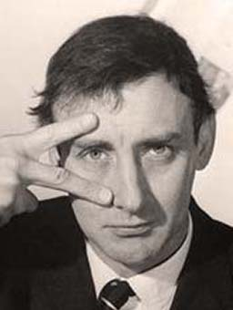

Nripendra Narayan
 Maharaja of Cooch Behar. 1862-1911. He succeeded his father in 1863 to an estate 1,300 square miles in area, located 400 miles north of Calcutta.
In 1878 he married Sunity Devi who bore him 4 sons and 3 daughters, soon after the Maharajah went to England to further his studies. Later in 1897, he volunteered for service in the British Indian Army which earned him the Order of the Bath (a honourable British order of chivalry).
The Maharajah came to Bexhill to convalesce after leaving Moor Hall, Ninfield. He died at 22 Marine Court Avenue on the 18th September 1911.
A memorial drinking fountain was dedicated to Nripendra on the present site of the De La Warr Pavilion, then re-erected in Egerton Park until 1963 when it was removed for restoration. It's current whereabouts are unknown.[19]
Canon Basil H Davies (Ixion)
 1879-1961. Parish Vicar at St. Barnabas' Church, and private motorcycle enthusiast.
Davies rode the very earliest motorcycles around the 1890's and by 1903 he was writing for The Motor Cycle Magazine under the pseudonym of Ixion.
Canon Davies retired as a priest in 1940 but continued writing motorcycle articles up until his death in Bournemouth. It was only then his Ixion identity, kept secret for nearly 58 years, became public.[20]
John Logie Baird
 1888-1946. Born in Scotland and studied at Glasgow University until the outbreak of the First World War, where he worked as a electrical engineer in munitions work.
Although many inventors worked on the development of television, in 1925 Baird was credited as the first to produce a moving television image.
Baird's other developments include a thermal undersock, fiber-optics, infrared night vision and radar - the latter still somewhat conjecture as it is still 'classified information'.
In 1944 he moved to Bexhill and lived at 1 Station Road. The house was demolished in 2007 and the site is now apartments named Baird Court.
Desmond Llewelyn
 'Q'. 1914-1999. Born in Wales, an actor most famous for his appearances in 17 of Ian Fleming's James Bond films from 1963-1999.
Llewelyn's acting career was halted in September 1939 when he was sent to fight in France during the Second World War. In 1940 he was captured by the German Army and was held as a prisoner for the rest of the conflict.
In 1957 the Llewelyn family moved to Battle, then to Linkwell in Bexhill Old Town in 1965, where he stayed until his death after an unfortunate road accident. He was the vice-president of The Old Town Preservation Society and a well respected local of the town.
Spike Milligan
 1918-2002. The Milligan family came to England from India where Spike's father was serving as a gunner in the army. Prior to the Second World War Spike played the trumpet in a jazz band.
On the 2nd June 1940 Milligan was posted to D Battery 56th Heavy Regiment Royal Artillery located at 'Worthingholm', Bexhill-on-Sea. This was part of an evacuated girls school on Hastings Road[21], located where Charter Towers apartments are today.
As part of his duties, Spike manned one of the artillery observation posts on Galley Hill (contrary to popular belief this was not the pillbox standing today). He left the town on the 6th January 1943.
Milligan broke into the world of radio broadcasting in 1951 with The Goon Show, one episode being of special local interest - The Dreaded Batter Pudding Hurler (of Bexhill-on-Sea), a recording of which can be found on YouTube.
A cast-iron 'Portrait Bench' sculpture of Milligan can be found on the beach at Glyne Gap.